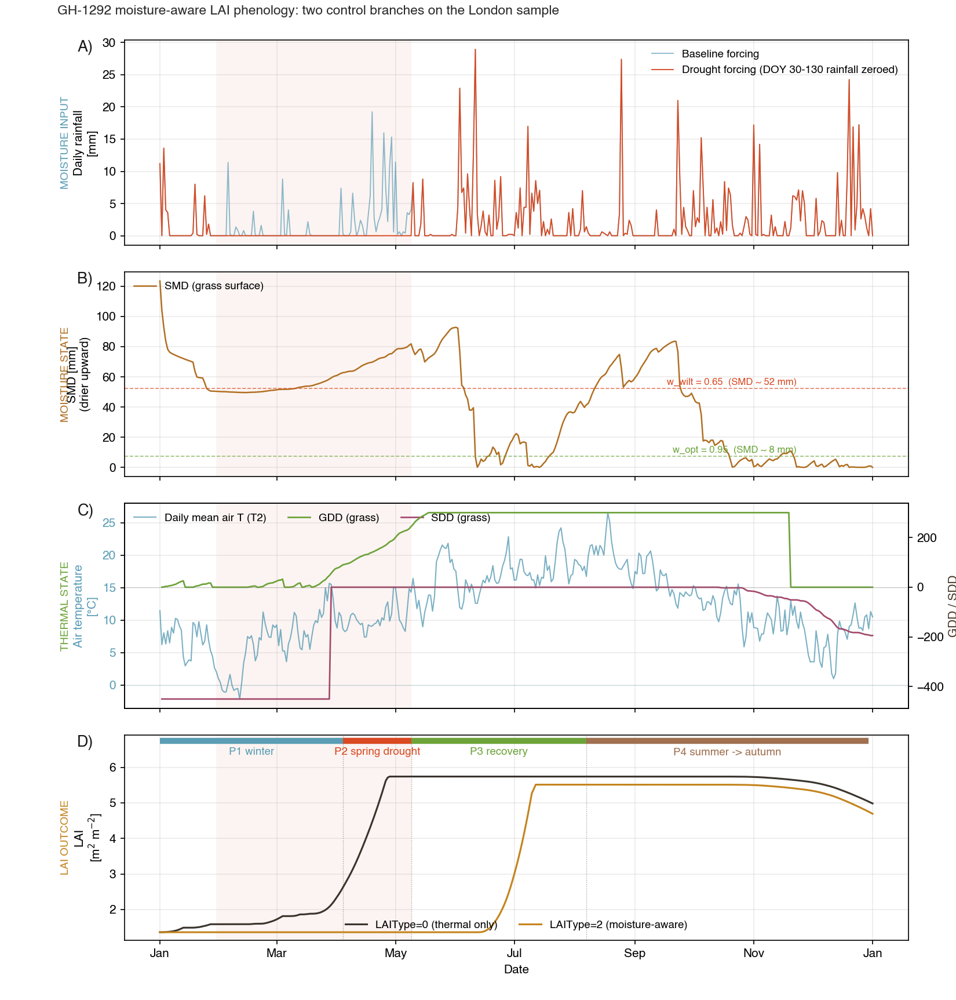
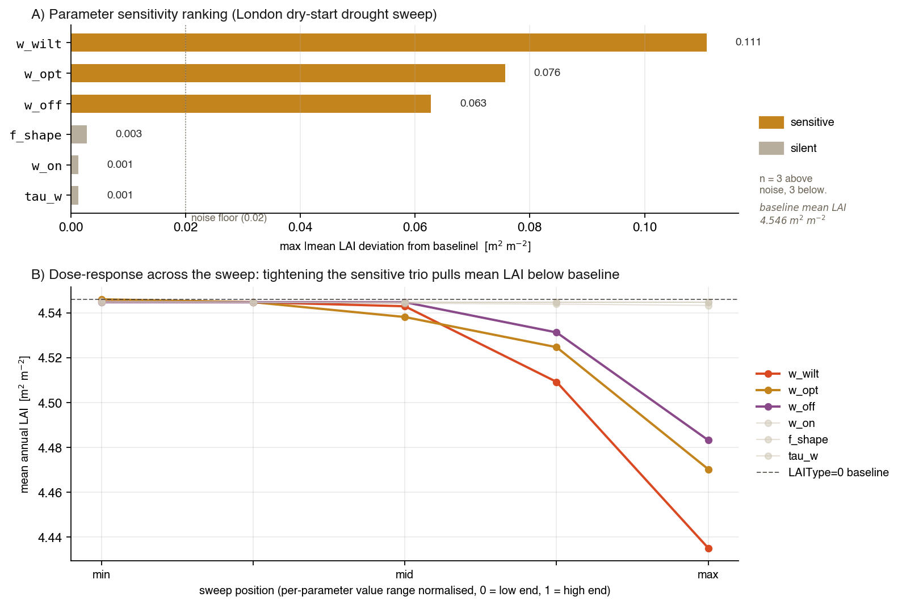

Extends the SUEWS thermal-only GDD/SDD scheme with a Jarvis-style soil-water stress factor and a CLM5-style persistence latch so rainfall-driven sites (monsoon grasslands, semi-arid savannas) can reproduce observed LAI seasonality. Three PRs shipped in this session on branch sunt05/gh1292-lai-moisture: scaffolding, numerics, calibration tool.
internal design record only — per Ting's directive
Two control branches in action (end-to-end demo)
LAI responds to two drivers: temperature (via GDD/SDD) and moisture (via the new Jarvis+latch). The figure below holds the temperature forcing fixed and perturbs only the rainfall — any LAI divergence between the two runs is therefore the moisture control acting alone.

A moisture input (daily rain, baseline vs drought). B moisture state (SMD + Jarvis thresholds). C thermal state (T2 + GDD/SDD; identical between runs). D LAI outcome with phase labels naming the dominant control in each stretch. Demo parameters are tightened (w_wilt = 0.65, w_opt = 0.95) because London's SoilStoreCap = 150 mm leaves default-threshold runs saturated -- the demo setup, not a recommended default.">
Four panels, one year on the London sample (lat 51.51) with a synthetic drought imposed by zeroing rainfall from DOY 30 to 130 (red-shaded window). Panel letters A / B / C / D at upper-left of each subplot; phase band P1 P2 P3 P4 at the top of D.
Panel A · moisture input: daily rainfall, baseline vs drought forcing.
Panel B · moisture state: SMD with Jarvis threshold markers (w_opt and w_wilt on London's SoilStoreCap = 150 mm).
Panel C · thermal state: daily mean air temperature (left axis) + GDD / SDD accumulators (right axis). Identical between the two LAIType runs — any LAI divergence in D is therefore entirely the moisture control's doing.
Panel D · LAI outcome with four phase labels:
P1 winter — CONTROL: thermal (T < BaseT_GDD). Both curves at LAImin.
P2 spring drought — CONTROL: moisture. Panel C says "leaf out" and LAI0 obeys (rises to 5.74); LAI2 stays at LAImin because wbar < w_off and the CLM5 latch forces ΔGDD = 0.
P3 recovery — CONTROL: moisture release. Rain returns, latch reopens, LAI2 catches up to ~5.51.
P4 summer → autumn — CONTROL: thermal (SDD). Both curves plateau then senesce together.
Click to zoom.
The three-PR story
PR1 — Scaffolding
Plumb LAIType = 2 through all layers as a no-op
02b90f927 · 17 Apr
6 new moisture params on LAI_PRM
3 per-veg-surface slots on PHENOLOGY_STATE
Fortran → Rust/C bridge → Python data model → checker rules all propagated
Latch flips on thermal+persistence thresholds, closes on drought
Seed wbar_id from first w to avoid tau-day ramp
Well-watered sites → graceful degradation to LAIType=0
6 files +162 / −42
PR3 — Calibration scaffolding
Parameter-sweep tool + sensitivity demonstration
6368af507 · 18 Apr
moisture_phenology_sweep.py with --all, --dry-start
Pairwise-validator co-adjustment for extreme sweep values
Design note Appendix A on calibration methodology + roadmap
Full FLUXNET calibration flagged as follow-up
4 files +429
Design C: governing equations (PR2)
w = clamp(1 − smdprev / smdcap, 0, 1)
wbar = wbar + (w − wbar) / tau_w
Jarvis:
f_w = 0 if w ≤ w_wilt
f_w = 1 if w ≥ w_opt
f_w = ((w − w_wilt)/(w_opt − w_wilt))f_shape else
CLM5 latch:
if latch on AND wbar < w_off → flip off
if latch off AND wbar ≥ w_on AND Tbar ≥ BaseT_GDD → flip on
Apply gate:
if latch on → ΔGDD *= f_w
if latch off → ΔGDD = 0
Thresholds operate on the dimensionless relative soil water w, not on SMD in mm directly — SMD enters the routine in millimetres and is converted internally so the six parameters stay unitless (except tau_w, in days).
Design note §6.1, PR2 implementation notes
Follows CLM5 stress-deciduous (Lawrence et al. 2019 §14), adapted to SUEWS' daily-state loop. Uses SUEWS' native water balance (soilstore_surf, SoilStoreCap) without introducing new hydrology state. Latch default is .TRUE. so well-watered sites don't wait for the running-mean trigger.
Parameter sensitivity (PR3 calibration detail)
Dry-start parameter sweep on the London sample, rendered as inline SVG (scales crisply, hover for exact values). Of the six moisture parameters exposed in LAI_PRM, three move LAI measurably; the other three stay silent on a well-watered site. This section is for people doing calibration.

Panel A ranks the six moisture parameters by max |mean-LAI deviation from the LAIType=0 baseline| across their swept value range. Three parameters (w_wilt, w_opt, w_off) sit above the 0.02 m² m⁻² noise floor; three (f_shape, w_on, tau_w) sit below. Panel B overlays the dose-response lines for all six (sensitive trio in colour, silent trio greyed) against the LAIType=0 baseline (dashed). The silent trio is silent because at London wbar stays above w_off year-round after the initial transient, so the latch-timing parameters are never consulted. Real dryland sites will exercise all six -- this London demo characterises the pipeline.">
Dry-start parameter sweep, two stacked panels:
Panel A — bar chart of worst-case |mean-LAI deviation from baseline| per parameter. Three bars (w_wilt, w_opt, w_off) cross the noise-floor line at 0.02 m² m⁻²; three are essentially zero (f_shape, w_on, tau_w).
Panel B — dose-response lines across the normalised sweep range. Sensitive trio in colour, silent trio greyed, LAIType=0 baseline dashed.
Finding: at a well-watered site like London, the Jarvis magnitude parameters (w_wilt, w_opt) and the drought-senescence trigger (w_off) drive LAI. The latch-timing parameters stay silent because once the spring transient clears, wbar sits comfortably above w_off and the latch is never consulted. Real dryland sites will exercise all six — this sweep validates the calibration pipeline.
Commit timeline (this branch)
6368af507PR3: calibration scaffolding for moisture-aware LAI (GH-1292)18 Apr 2026
ff80f8767PR2: activate Design C numerics for moisture-aware LAI (GH-1292)17 Apr 2026